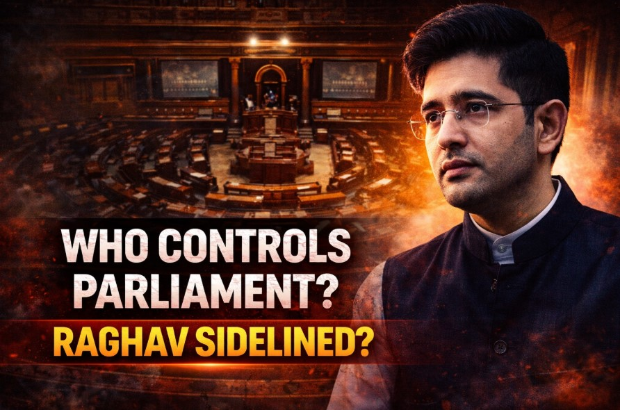

When a rising voice in Parliament suddenly goes quieter, it raises a bigger question—who actually decides what gets said inside India’s highest democratic institution?
Recent developments around Raghav Chadha have triggered exactly that question. While he remains a Member of Parliament, his reduced visibility in debates suggests something deeper than routine political reshuffling.
---Raghav Chadha has not been expelled or suspended. Yet, his presence in key parliamentary discussions appears significantly reduced.
In modern political systems, control is rarely exercised through outright action. It is applied through access—who gets the microphone, and who does not.
---From the outside, Parliament appears to be a space of open debate and free expression.
In reality, it operates through structured control:
Across parties, the mechanisms are strikingly similar:
This ensures consistency—but also limits spontaneity.
---Raghav Chadha represents a new generation of politicians—articulate, media-savvy, and rapidly gaining recognition.
But in structured party systems:
The heated exchanges, walkouts, and strong statements seen on TV are often perceived as spontaneous.
However:
The situation around Chadha reflects a broader political reality:
This allows parties to maintain unity while managing internal dynamics.
---There are three possible directions:
Raghav Chadha’s situation is not just about one politician—it reveals how modern parliamentary systems function behind the scenes.
In today’s politics, power is not just about position. It is about access, timing, and control of narrative.